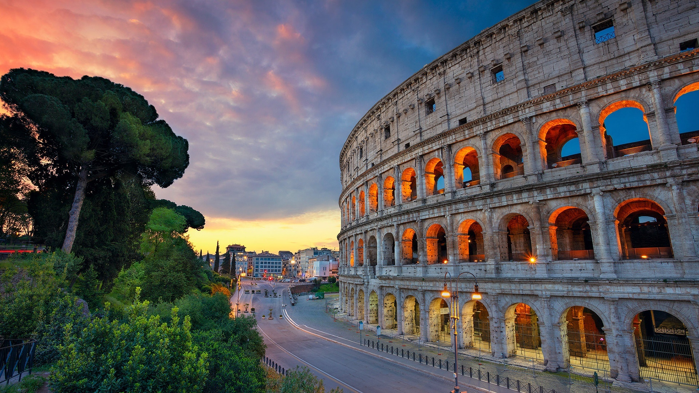

羅馬競技場 Colosseum
公元 72 年由韋斯巴薌皇帝下令興建，公元 80 年提圖斯在位時落成，可容納約五萬名觀眾。這裡曾舉行角鬥士比試、狩獵表演，甚至注水模擬海戰。中世紀後曾被當作採石場，部分石料被拆去興建教堂。1980 年與羅馬歷史中心一同列入世界文化遺產，2007 年獲選為新世界七大奇蹟之一。

意大利 ITALY
羅馬（Rome，意大利語 Roma）相傳於公元前 753 年由羅慕路斯建立，先後經歷王政、共和國與帝國三個階段。公元前 27 年，奧古斯都成為首位皇帝，此後數百年間羅馬帝國的版圖橫跨歐洲、北非與西亞，地中海幾乎成為帝國的內海。
公元 476 年西羅馬帝國滅亡後，羅馬轉為教宗國的核心，聖彼得大教堂與梵蒂岡成為基督教世界的精神中心。1871 年，羅馬成為統一的意大利王國首都；第二次世界大戰後則成為意大利共和國首都。1980 年，聯合國教科文組織把「羅馬歷史中心」列入世界文化遺產。
羅馬被稱為西方文明的搖籃：拉丁語、羅馬法、拱券與混凝土技術都從這裡傳遍歐洲。文藝復興與巴洛克時期，米開朗基羅、拉斐爾與貝尼尼在這座城市留下大量傑作，廣場、噴泉與方尖碑構成獨特的城市景觀。
羅馬人的生活圍繞廣場（piazza）與咖啡吧展開，早上站著喝一杯 espresso，晚上在巷弄裡吃 carbonara 或 cacio e pepe，是再平常不過的日常。電影《羅馬假期》讓這座城市成為永恆的浪漫符號，而古蹟與現代生活緊貼共存，也是羅馬最迷人的地方。
羅馬的景點非常集中，以下四個地方步行或乘一程地鐵就可串連起來。點擊相片可以放大欣賞。
公元 72 年由韋斯巴薌皇帝下令興建，公元 80 年提圖斯在位時落成，可容納約五萬名觀眾。這裡曾舉行角鬥士比試、狩獵表演，甚至注水模擬海戰。中世紀後曾被當作採石場，部分石料被拆去興建教堂。1980 年與羅馬歷史中心一同列入世界文化遺產，2007 年獲選為新世界七大奇蹟之一。
古羅馬廣場是共和時期的政治、宗教與商業中心，演講台、元老院、神廟與凱旋門的遺跡集中在這片低地上。旁邊的帕拉提諾之丘相傳是羅慕路斯建城之處，後來成為皇帝宮殿所在。站在丘上望向廣場，可以一次過看清羅馬由共和走向帝國的地理脈絡。
現存建築約於公元 126 年由哈德良皇帝重建，原為供奉眾神的神廟，公元 609 年起改為教堂而得以完整保存。最大特色是直徑約 43.3 米的混凝土穹頂，頂部中央有一個圓洞（oculus），陽光會隨時間在牆上移動；下雨時雨水直接落在地板上，地面設有排水孔。
由建築師尼古拉．薩爾維設計，1762 年完工，是巴洛克晚期最著名的噴泉，也是羅馬最大的噴泉。傳說背對噴泉、用右手把硬幣越過左肩拋入水中，就能再次回到羅馬。每日拋入的硬幣金額以千計，會定期收集並捐作慈善用途。
用一段漫步影片，先感受羅馬的街頭節奏。